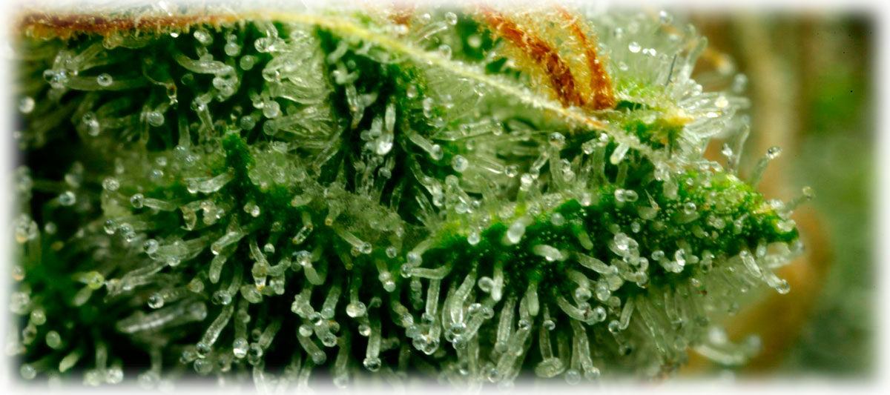

ТГК (тетрагидроканнабинол) — это основное биологически активное вещество в конопле. Растение содержит около 400 различных соединений, более 60 из которых являются каннабиноидами. Именно ТГК отвечает за большинство психотропных эффектов, которые ощущает человек при употреблении марихуаны.
Биологический механизм действия
В нашем мозге существуют специфические каннабиноидные рецепторы, которые в норме активируются внутренним нейромедиатором — анандомидом (от санскритского «внутреннее блаженство»).
ТГК имитирует структуру анандомида и присоединяется к этим же рецепторам. Однако, в отличие от естественного процесса, ТГК нарушает нормальную связь между нейронами, что приводит к изменению восприятия времени, памяти, аппетита и эмоционального состояния.
Концентрация и свойства ТГК
Где находится?
Максимальная концентрация наблюдается в соцветиях женских неопыленных растений (Сенсемилья). В корнях и semenaх ТГК практически отсутствует.
Декарбоксилирование
В живом растении ТГК находится в форме ТГКК (без психотропного действия). Только при нагревании (сушке/курении) молекула теряет углекислый газ и превращается в активный ТГК.
Уровни ТГК
Процентное содержание зависит от сорта. В качественном гашише оно может достигать 10-20%, а в очищенном гашишном масле — более 50%.
Эффекты и медицинское применение
Психика и творчество
В умеренных дозах ТГК стимулирует творческую активность и способствует глубокому сосредоточению на одном процессе, однако снижает способность к многозадачности.
Терапия
Синтетические экстракты ТГК используются в западной медицине для облегчения симптомов химиотерапии, борьбы с потерей веса и лечения ряда психических расстройств.
Зачем растению ТГК?
Ученые выдвигают несколько гипотез о роли ТГК в природе:
- Размножение: Выступает в роли женского полового гормона конопли.
- Защита: Обладает антибактериальными свойствами, защищая растение от вредителей и болезней.
- Выживание: Возможно, помогает растению поглощать радиацию на больших высотах без вреда для клеток.
🌿 Изучите разницу в эффектах
ТГК проявляет себя по-разному в зависимости от сорта растения. Узнайте, чем отличаются Сатива и Индика.
Сатива vs Индика